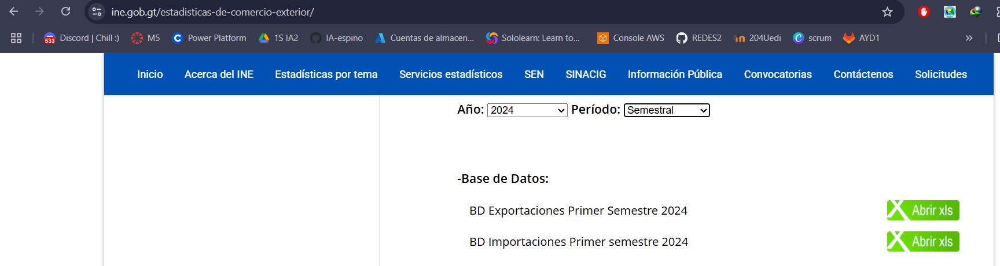
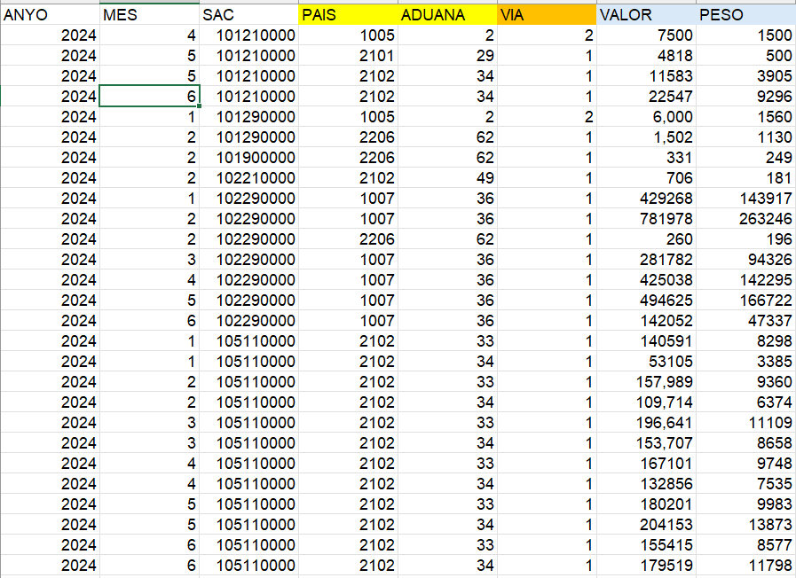
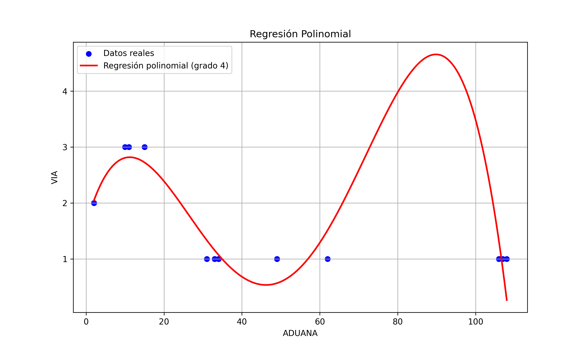

Fuente de datos
Datos utilizados
Score (R²) polinomial: 0.929795948228993
El R² (coeficiente de determinación) indica qué porcentaje de la variabilidad
de los datos de salida
(la variable que se predice, en este caso VIA) puede ser explicado por el modelo.
Puede explicar aproximadamente el 93% de la variabilidad de los datos.
Sin embargo, mientras más alto el grado (como 4 o 5), más compleja la curva.
Esto puede llevar al sobreajuste si el modelo se ajusta demasiado bien a los datos de
entrenamiento pero falla con nuevos datos.
Explicación por métrica:
Precision = 1.00
De todas las veces que el modelo predijo que una fila pertenecía a la VIA X, el 100% de las veces tenía razón.
Recall = 1.00
De todos los datos que realmente eran de la VIA X, el modelo los detectó todos.
F1-score = 1.00
Es una combinación balanceada entre precision y recall. En este caso también eficiente.
Support
Cantidad de ejemplos reales que había de cada clase en el conjunto de prueba:
13 con VIA = 1
10 con VIA = 2
5 con VIA = 3
Explicación del árbol de decisión
Nodo raíz (arriba):
Condición: ADUANA <= 23.0
Gini: 0.588 (mide la impureza, valores cercanos a 0 indican nodos puros)
Samples: 112 (total de muestras en este nodo)
Value: [61, 34, 17] (cantidad de muestras de cada clase: clase 1, clase 2, clase 3)
Clase predicha: 1 (la clase más frecuente en este nodo)
Primer nivel de división:
Si ADUANA > 23.0:
Nodo derecho:
Gini: 0.0 (nodo puro)
Samples: 61
Value: [61, 0, 0] (todas las muestras son de la clase 1)
Clase predicha: 1
Si ADUANA <= 23.0:
Nodo izquierdo (se sigue dividiendo):
Condición: ADUANA <= 6.0
Gini: 0.444
Samples: 51
Value: [0, 34, 17] (no hay muestras de clase 1, sólo de clase 2 y 3)
Clase predicha: 2
Segundo nivel de división (para ADUANA <= 23.0):
Si ADUANA <= 6.0:
Nodo izquierdo:
Gini: 0.0 (nodo puro)
Samples: 34
Value: [0, 34, 0] (todas las muestras son de la clase 2)
Clase predicha: 2
Si ADUANA > 6.0:
Nodo derecho:
Gini: 0.0 (nodo puro)
Samples: 17
Value: [0, 0, 17] (todas las muestras son de la clase 3)
Clase predicha: 3
Interpretación general
El árbol utiliza únicamente la variable ADUANA para clasificar las muestras en las clases de "VIA".
Cada nodo terminal (hoja) es completamente puro (gini = 0), lo que significa que todas las muestras en esos nodos pertenecen a una sola clase.
El árbol sigue una lógica sencilla:
Si ADUANA > 23, siempre predice clase 1.
Si ADUANA <= 6, siempre predice clase 2.
Si ADUANA está entre 6 y 23, predice clase 3.